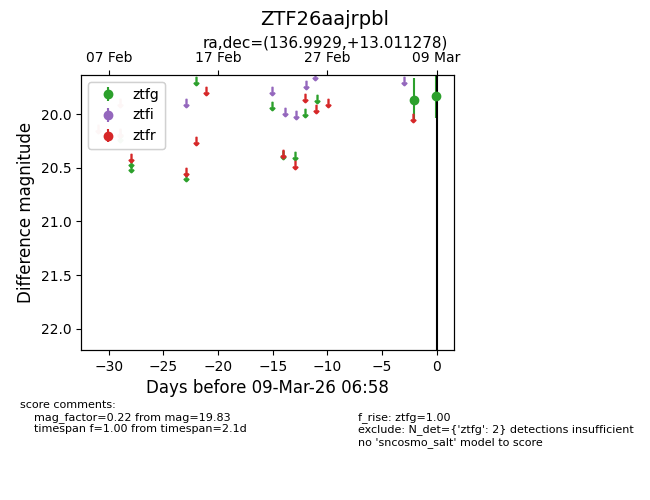
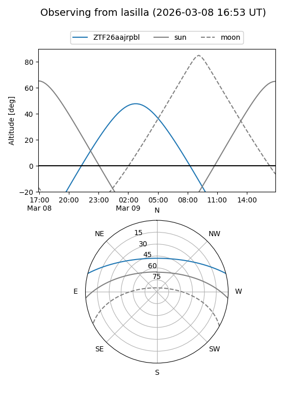
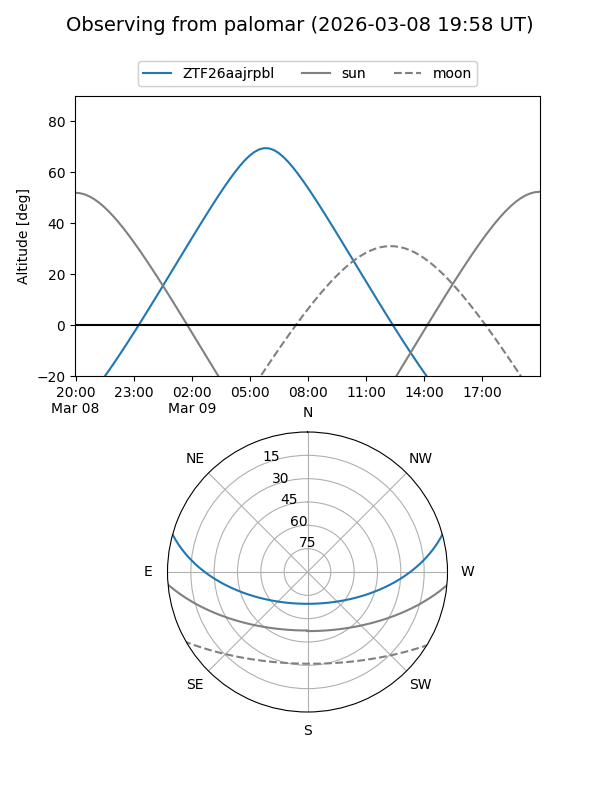

ZTF26aajrpbl
Target ZTF26aajrpbl at 2026-03-09 06:59
Aliases and brokers:
FINK: link
Lasair: link
ALeRCE: link
alt names
ZTF26aajrpbl (ztf,fink_ztf)
Coordinates:
equatorial (ra, dec) = 136.9929,+13.01128
equatorial (HMS+DMS) = 09:07:58.30,+13:00:40.60
galactic (l, b) = (216.4031,+36.10253)
Flags:
Photometry:
last ztfg=19.83
2 ztfg detections
Lightcurve

Visibility


Additional plots